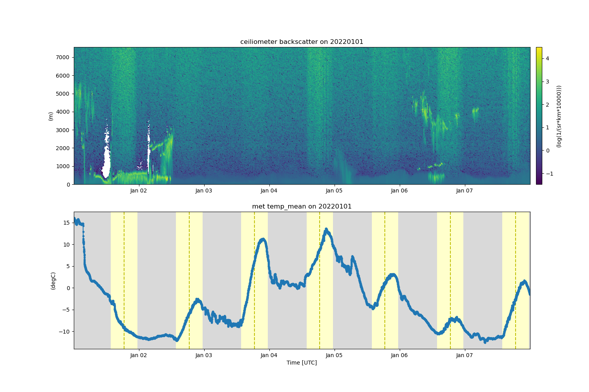

Note
Click here to download the full example code
Plot multiple datasets¶
This is an example of how to download and plot multiple datasets at a time.
- 
Out:
[DOWNLOADING] sgpceilC1.b1.20190101.000000.nc
[DOWNLOADING] sgpceilC1.b1.20190102.000013.nc
[DOWNLOADING] sgpceilC1.b1.20190103.000011.nc
[DOWNLOADING] sgpceilC1.b1.20190104.000008.nc
[DOWNLOADING] sgpceilC1.b1.20190105.000006.nc
[DOWNLOADING] sgpceilC1.b1.20190106.000004.nc
[DOWNLOADING] sgpceilC1.b1.20190107.000001.nc
/usr/share/miniconda3/envs/act-docs/lib/python3.10/site-packages/dask/core.py:119: RuntimeWarning: invalid value encountered in log10
return func(*(_execute_task(a, cache) for a in args))
/usr/share/miniconda3/envs/act-docs/lib/python3.10/site-packages/dask/core.py:119: RuntimeWarning: invalid value encountered in log10
return func(*(_execute_task(a, cache) for a in args))
import matplotlib.pyplot as plt
import os
import act
# Place your username and token here
username = os.getenv('ARM_USERNAME')
token = os.getenv('ARM_PASSWORD')
# Get data from the web service if username and token are available
# if not, use test data
if username is None or token is None or len(username) == 0 or len(token) == 0:
ceil_ds = act.io.armfiles.read_netcdf(act.tests.sample_files.EXAMPLE_CEIL1)
met_ds = act.io.armfiles.read_netcdf(act.tests.sample_files.EXAMPLE_MET1)
else:
# Download and read data
act.discovery.download_data(username, token, 'sgpceilC1.b1', '2019-01-01', '2019-01-07')
ceil_ds = act.io.armfiles.read_netcdf('sgpceilC1.b1/sgpceilC1.b1.201901*.nc')
met_ds = act.io.armfiles.read_netcdf(act.tests.sample_files.EXAMPLE_MET_WILDCARD)
# Read in CEIL data and correct it
ceil_ds = act.corrections.ceil.correct_ceil(ceil_ds, -9999.0)
# You can use tuples if the datasets in the tuple contain a
# datastream attribute. This is required in all ARM datasets.
display = act.plotting.TimeSeriesDisplay((ceil_ds, met_ds), subplot_shape=(2,), figsize=(15, 10))
display.plot('backscatter', 'sgpceilC1.b1', subplot_index=(0,))
display.plot('temp_mean', 'sgpmetE13.b1', subplot_index=(1,))
display.day_night_background('sgpmetE13.b1', subplot_index=(1,))
plt.show()
# You can also use a dictionary so that you can customize
# your datastream names to something that may be more useful.
display = act.plotting.TimeSeriesDisplay(
{'ceiliometer': ceil_ds, 'met': met_ds}, subplot_shape=(2,), figsize=(15, 10)
)
display.plot('backscatter', 'ceiliometer', subplot_index=(0,))
display.plot('temp_mean', 'met', subplot_index=(1,))
display.day_night_background('met', subplot_index=(1,))
plt.show()
ceil_ds.close()
met_ds.close()
Total running time of the script: ( 0 minutes 51.491 seconds)